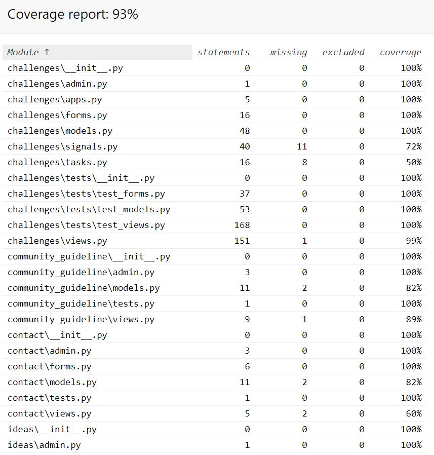
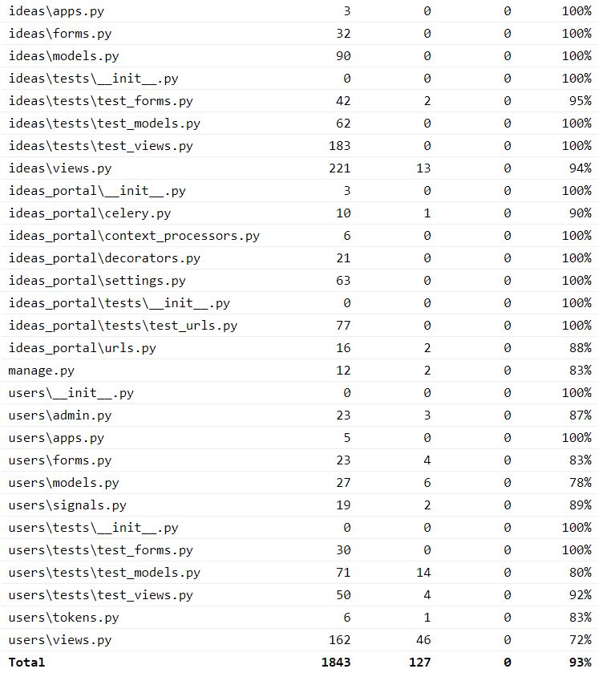
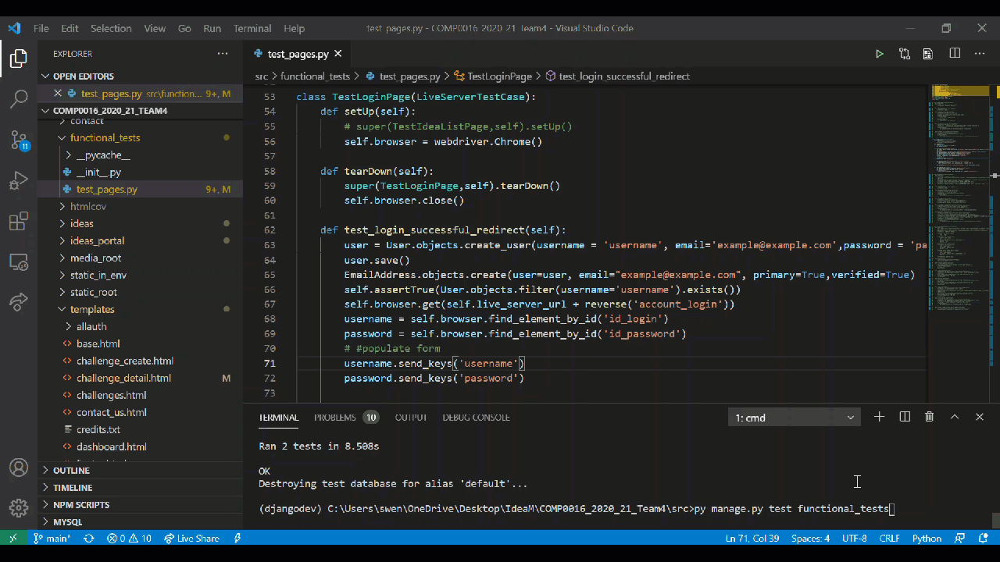
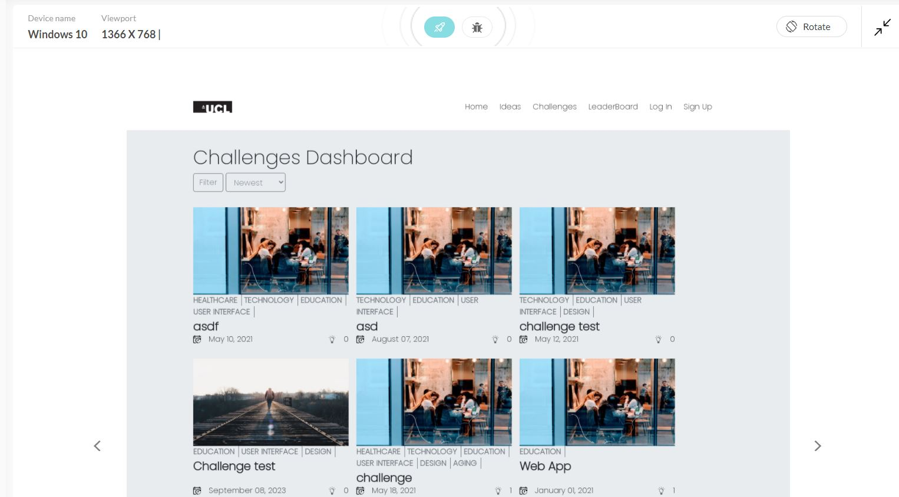
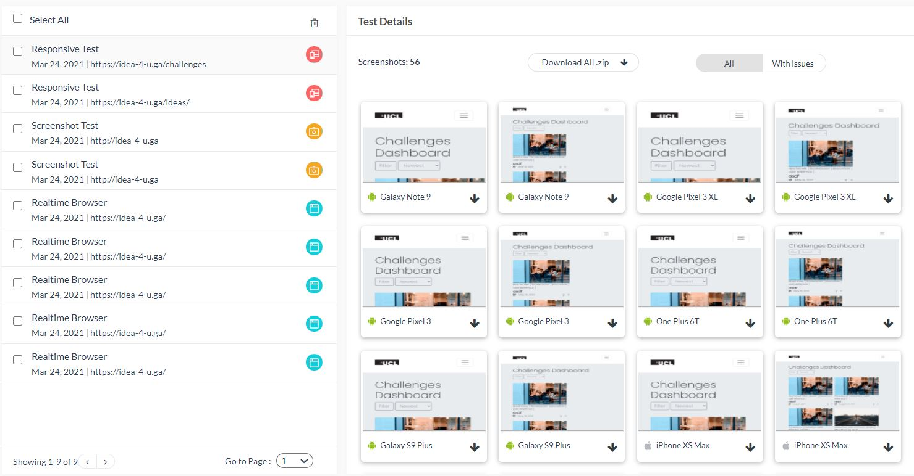
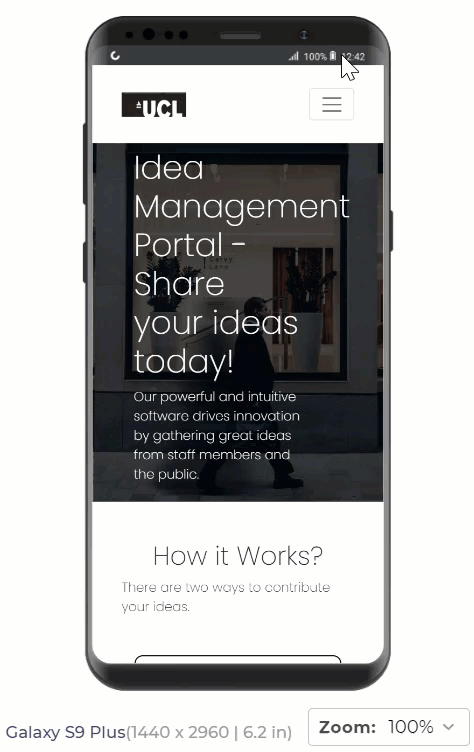
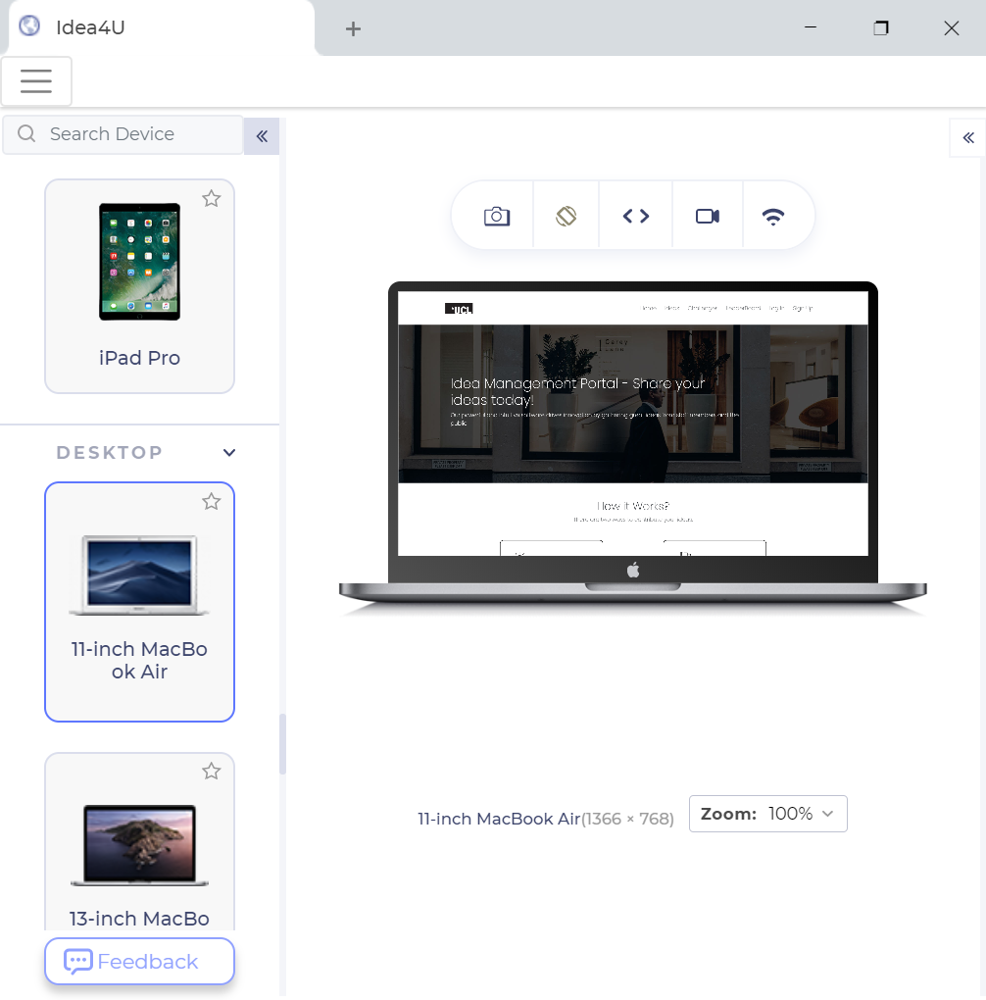
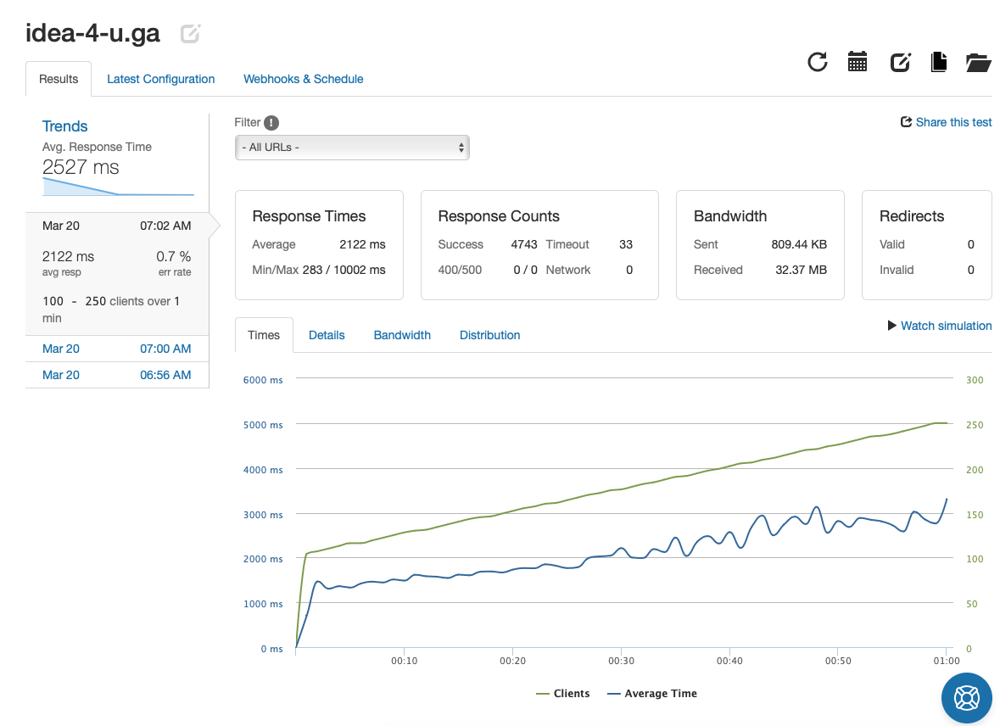
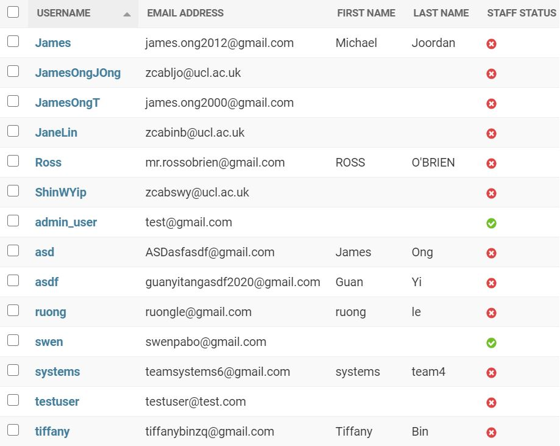
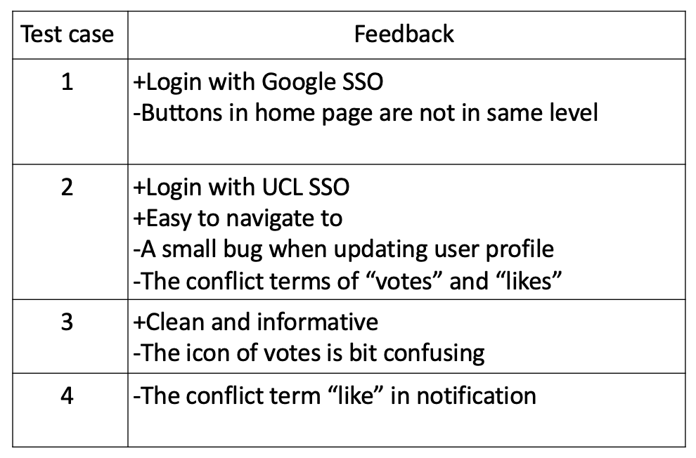

Testing Strategy
For quality assurance, we applied various testing strategies to thoroughly test our code and the user experience with our web portal.
1. Structured tests
Our tests are structured to fit our project by grouping written tests
into test forms. test models and test views files in each app module (challenges, ideas, users). We also separate functional tests and url tests into separate folders for better efficiency in designing tests.
2. Reports and coverage
We use generated test coverage reports to measure the effectiveness of our tests and also to suggest what should be tested.
We also generate performance reports for stress testing and responsive testing to find ways to improve our web app.
3. Regression Testing
To ensure existing functionalities are not broken when adding new code, automated integration tests are run before pushing new changes into the main server.
4. Virtual Environments
We use python virtualenv to develop our code in isolated environments. This is to ensure our project is not affected by other development outside the environment, and dependencies can be tested without installing them on our devices.
Automated Unit & Integration Testing
To verify that the individual components of our code and the interactions between them behave properly, we performed automated unit and integration testing using the Django test framework built on the python standard unittest library.
Automated testing saved us a lot of time as our portal contains many features which is time-intensive to perform manual testing every time code is changed. This is done by writing individual test cases for the methods on the urls, models, views and forms for our application.
In our test cases, we utilised the Test Client python class that acts as a dummy browser to test our views and interact with our application programmatically by
simulating GET and POST requests on url.
Here are some examples of our written test cases.


We also used the coverage tool for measuring the amount of code tested, which we have managed to achieve total coverage above 90%.
 Functional Testing
Other than testing the code functionalities, we also want to test the user interactions with the application running on a browser.
To achieve this, we used Selenium framework with Chrome webdriver to automate real browser testing by simulating a real user interacting with the site, such as :
The LiveServerTestCase class provided is used to launch live Django server in the background during the test and shutting down on teardown.
Automating test user login and signup redirect
Compatability and Responsive Design Testing
To test that our web application works well across different mobile and desktop browsers, we used an application called lambdatest to perform live interactive multibrowser and multi operating system testing.
We also used the software to auto generate screenshots of our web pages across multiple devices, OS, browsers and resolutions to perform visual cross system compatibility testing.
For responsive testing, we installed the LT browser application to test our website’s responsiveness live across a variety of major devices and viewports.
 
Test Reports from LTBrowser & PageSpeed Insights :
Home Page •
Ideas Page •
Challenges Page
Performance/Stress Testing
For load testing, we used a third party software called Loader.io. This test involves testing the response time and error rate with variables such as the number of users and the time span. Below is an example of load test with 100 to 250 users constantly interactive with the website over one minute. Results show that we have a very low error rate, 0.7% in this case, and a quick response time of 2.1s on average.
Click here to view the report
User Acceptance Testing
To test that our web application is well validated by end users, we have sent the url of our deployed web application to our Clients, Teaching assistant, and our peers to try out the features of our web application by interacting with it. The subsequent feedbacks collected on the user experience were then used improve our application.
